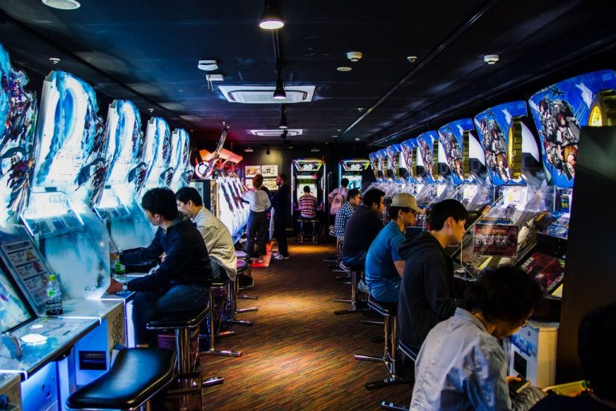

Lifestyles of Japan
Japan is a wondrous multifaceted country filled with young people living fast-paced lifestyles alongside the elderly practicing zen and tranquility daily.
On the outside, it looks as though it’s the perfect place to live. It’s easy to admire the perfect balance between the future – Japan boasts some of the world’s most technologically advanced systems; the present – the social, arts, food and drinks, and entertainment culture is rivalled by none; and past – they’re a proud country with strong roots to their traditions and their history is still evident almost everywhere you look.
The Japanese people have a deep affection for the beauty of the landscape. The ancient Shinto religion says natural features like mountains, waterfalls and forests have their own spirit or soul.Fun Fact: Did you know that the population of Japan also boasts some of the world’s oldest living people on the Okinawan Islands?
You’ve seen the stunning photos online, watched the popular Japanese dramas with incredibly gorgeous leads, and binged on the anime series that everyone seems to be talking about. But how much of that actually gives you insight into what the lifestyle is really like in Japan?
Travelling around the country and absorbing pop-culture in your spare time is one thing, but actually living the day-to-day lifestyle in Japan is completely different!
Many people experience a bit of a culture shock when they try to settle down in Japan. Whilst most will quickly adapt and move on, the lingering feeling of outsider-ness might stick around for a while.
We’ve detailed below some fun, interesting, and enlightening information about the lifestyle in Japan for you to read and try to understand it a bit better.
Japanese Working Culture
In the past, and still quite evident in companies today, those working for corporations follow an extremely strict hierarchy. There is a distinct relationship between the ‘senpai’ (experienced), and the ‘kohai’ (inexperienced).
Most people who work in the major cities like Tokyo and Osaka typically take on office jobs and are collectively known as Japanese salarymen.
And when you take on these jobs, there are a few assumptions that need to be made, such as: overtime is expected; you should probably not leave work before your manager does; and if your manager wants to go for a drink after work, you’ll be accompanying them.
In fact, it’s become somewhat of a social phenomenon for salarymen to drink themselves silly with their colleagues on a Friday night, pass out on the streets, and wake up to catch the earliest train home. You will see for yourself if you’re out and about in the city at the end of the working week!
These days, there are small but growing shifts in the workplace. The traditional route of spending your entire life at one company is slowly disappearing, with more and more younger people likely to become ‘furita’ and holding multiple part-time/casual jobs (for more freedom), moving overseas to work, or simply staying at home.
Japanese Food Culture
When traveling to Japan, food is often the main focus of many itineraries. It’s so vastly different from many other countries, there are so many layers of complexities with the food culture – what to eat, how to eat it, where to eat it, etc.

One of the very first thoughts people have when thinking about Japan is how much fresh sushi they’re going to consume (we’re also putting our hands up here – guilty as charged!), and we totally get it. Sushi is delicious and easy, but did you know that some sushi establishments in Japan also consider its creation an artform?
There’s quite a variety of Japanese sushi rolls out there, outside of the usual maki rolls that people order. If you’re interested in finding out more, we’ve detailed an entire list of 12 traditional Japanese sushi rolls you need to taste here!
Aside from sushi, it’s good to understand that rice is a staple in the Japanese people’s diet, and quite a few Japanese foods incorporate it. This includes donburi (which simmered or fried food is served over rice), onigiri (small parcels of rice with filling inside, wrapped in seaweed), mochi (pounded rice cakes), and the lesser-known chazuke (rice served with green tea poured in).
If you’re a big fan of seafood, you’re in luck! Given Japan’s geographic location, fresh seafood is an essential to the regular Japanese diet. Whether it’s eaten live (odorigui-style, literally fresh from the ocean and sometimes still moving!), raw (sashimi), grilled (yaki), or deep-fried (tempura) – the freshness of the ocean is not too far away.
If you’re curious about the eating lifestyle in Japan, know that there is a great balance between eating in and eating out. Many restaurants across the country specialised in one particular dish, honing their technique over years and years of serving it to local and returning customers.
There is a reason why Japan is always in the top few countries in the entire world with the most Michelin starred restaurants. The chefs absolutely love their craft. It brings immense joy to them to see customers enjoying their food.
In fact, if you didn’t know already, one of the best ways to show your appreciation of a delicious bowl of ramen is to loudly slurp at the soup! The sound is music to any ramen chef’s ears without actually saying anything to them.
One thing to note about eating out in Japan is that, unlike many other countries, the Japanese people are accustomed to ‘speed eating’, and don’t dawdle as much. Thus, they’re in and out of restaurants quite quickly. This could be due to the fact that their lunch breaks are an hour, they are working overtime, and traveling to and from their workplace takes a long time.
Whilst you’re not expected to do the same thing, you may find that for restaurants with long lines, it is courteous to order and eat and leave so that someone else may take your spot.
Lifestyle in Japan – Family Life
The Japanese are famous for their willingness to work very hard. Children are taught to show respect for others, especially parents and bosses. They learn to do what’s best for their family or company and worry less about their own needs.
Whilst this may seem quite obvious, in Japan, this was especially enforced. The father was usually the main breadwinner and protector of the household, whilst the mothers stay at home to care for the children.
These days, the hierarchy has definitely relaxed a bit. This could be due to a number of reasons, but one of the biggest is that the growth of the population has exponentially slowed down over the years, with more and more women choosing not to have children at all.
Most families across Japan nowadays will reside within the main city areas in small apartment units and will visit their elderly grandparents, who likely reside in the countryside, a few times a year.
The opportunities presented in cities are vast and limitless for young children, but this comes as a sacrifice on the traditions of Japan that will likely be kept to the grandparents.
Popular Hobbies In Japan
Lifestyle in Japan (especially in the city areas) is extremely fast-paced. A lot of the weekdays are dedicated to commuting to and from work, and actually working the salary job. When they finish work, Japanese people love to play in Pachinko and in arcades games centres.
Anime is obviously another super popular hobby in Japan, among all generations! Reading mangas is still a very appreciated activity and Japanese people enjoy both the old classics and the new arrivals.
But it’s undeniable that more and more people switch to watching animation on streaming platforms. On Netflix for example, the most popular videos are usually anime, followed by Japanese drama.
On the other hand, Japanese people also turn to hobbies that allow for inner tranquillity and mental nourishment.
One of the more traditional hobbies of Japanese people is relaxing in natural hot springs called “Onsen”. Check out here our list of the most beautiful onsen towns in Japan.
Another activity Japanese people love is playing the board game “Go” (known as “Igo” in Japan). The game is played whereby two players pick a colour (white or black) and take turns placing a stone of their colour on the intersections of the board. The goal is to end up with more territory than your opponent. This game requires strategy and patience, and thus is a great hobby to relax on the weekend.
Another hobby that Japanese people like to take up is calligraphy, or shodo. It’s a beautiful form of art that has been practiced over centuries. Contrary to belief that you simply pick up a pen and paper and write cursive, shodo has many layers of techniques to master, thus it is a great long-term hobby for those into their arts and craft.
If you’re interested in learning more about shodo, we have a wonderful article which articulates what shodo entails and how you can get started.
Another hobby that Japanese people have long preached is getting to the outdoors and breathing in some fresh air. About 70% of Japan is actually covered by mountains and the country itself boasts some of the most scenic hiking trails in the world. Commuting from Tokyo is super easy to get to limitless rural cities to escape the concrete jungle.
Important Events In Japan
In the Japanese calendar, there are many, many national holidays and traditional festivals (Matsuri) throughout the year. Due to their strong belief of holding onto their historical roots, some of these events have been held for centuries with no sign of slowing down.
National holidays are adhered to by the entire country, and for some, you will find that entire cities shut down. It is during these holidays that families try to visit their relatives living in the more rural areas.
These holidays include:
(January 1-3) – One of the most important days for the Japanese people, as it is during this period that they take time to cleanse and refresh their mind for another year ahead.
Coming-Of-Age (2nd Monday of January) – This is when young people turning 20 are officially recognised as adults. They will get dressed in Kimono, Haori, or Hakama, and are celebrated by their families and the locals.
>Setsubun (3 February) – The last day of the lunar new year is celebrated by people throwing roast beans to rid demons of the previous year and make room for good luck in the new year.
Golden week – A succession of 4 public holidays during the first week of May. Most Japanese people take advantage of this period of the year to travel within the country or internationally.
People take these national holidays quite seriously and really honour the age-old traditions. It’s a great way to observe the intricacies of the culture of Japan.
Lifestyle in Japan – Popular Fashion Styles
Japan is a rightful leader in the world in terms of fashion. The devil-may-care attitude of popular Japanese fashionistas demands the attention of those around the world interested in fashion that’s unique, individual, and out there.
When you think of Japanese fashion, your first thought might be the bright, colourful, crazy outfits worn by influencers in Harajuku.
The truth is, Japanese fashion is all over the place, and yet it is all about comfort. Comfort in your own skin, as depicted by those wearing grunge outfits on a sunny Sunday morning, and comfort found in loose, flowy clothing, as evident in the long and soft midi skirts Uniqlo always have on the racks.
One style of Japanese clothing that’s slowly rising and carving a niche for itself is Japanese streetwear. Endorsed by almost all anime characters and as worn on many a lead character in Japanese dramas, the cool, calm, collected look of a pair of track pants and oversized hoodie just oozes street appeal.
Japanese Religions and Beliefs
There are two main religions in Japan: Shinto and Buddhism.
Shinto is the Japanese religion from ancient times based on ancestor and gods worshipping. Those who follow Shinto believe that all things on earth were created and ruled over by gods who lived in nature.
Shinto shrines are located all over Japan. These are places of worship for Shinto followers. They are generally located in forests, with a torii gate entrance, a ‘chozuya’ (hand wash station), and sanctuaries where people pray.
Buddhism was introduced to Japan in the mid-6th century. From then, followers massively spread across the country and Buddhist temples were built in almost every area.
Buddhism has had a clear influence on Japanese traditional culture over the years, with one of the biggest takeaways being the practice of ‘Zen’ in everyday lifestyle
Whilst these are two different religions all together, most Japanese people actually believe in both religions, and incorporate their practices seamlessly into their everyday lives
It’s also important to note that Japanese people are quiet superstitious and they give a lot of attention to lucky charms like Maneki Neko, Omamori, Omikuji or also Japanese Ema.
Christianity and Islam are amongst the minority of religions in Japan. However, the majority of Japanese people still celebrate such holidays as Christmas and Valentine’s Day!